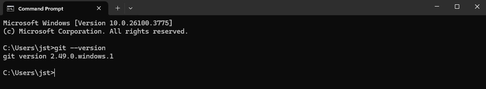
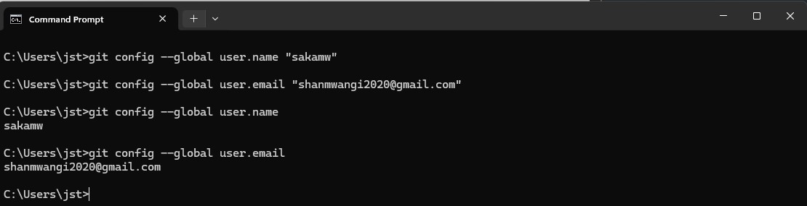
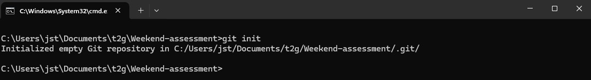
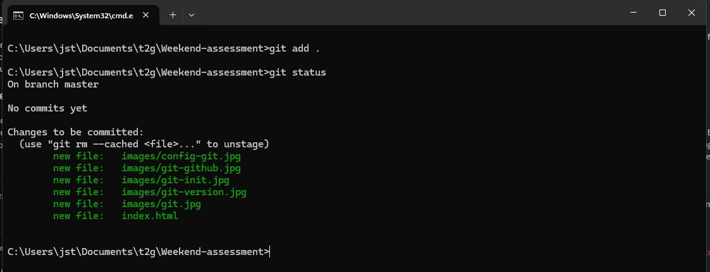
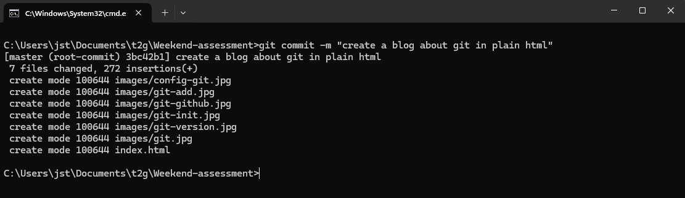
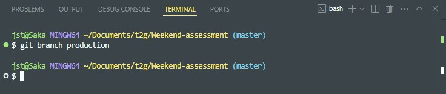
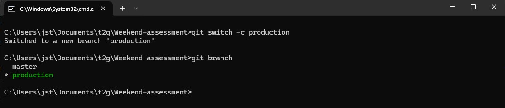
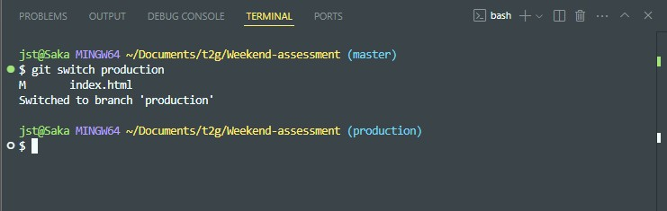
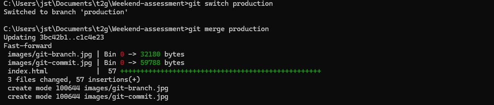
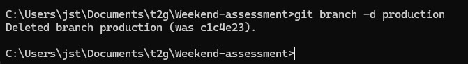

Everyday Git
A practical guide to Git version control for everyday use.
1. Get Started
Welcome to Everyday Git — your beginner-friendly guide to understanding Git, a powerful version control system. In this blog, we'll walk you through essential Git concepts step-by-step. But before we dive in, let's set up your development environment.
1.1 Setting Up Your Environment
Create Your Project Folder
Start by opening your file explorer and creating a folder named
everyday-git or any name you prefer. This folder will
contain all your HTML files.
Create Required Files
Inside your project folder, create a new file called
index.html. This file will serve as the main page of
your webpage. You can also create additional folders like
images/ or assets/ to store your
screenshots and other media.
Open Your Project in VS Code
Open your project folder in
Visual Studio Code (VS Code). You can
do this by right-clicking on the folder and selecting
"Open with Code" or by using the "File" menu in VS
Code or the command-line. This will allow you to edit your
HTML files easily.
You're Ready!
With your environment set up and index.html created,
you’re now ready to begin your journey into Git. In the next
section, we’ll look at what Git is and why it’s so widely used in
the world of software development.
2. What is Git
Git is a Version Control System. A version control system is a software
that tracks and manages changes to files over
time. Version Control Systems allow users to revisit earlier versions of
their files, compare changes between versions, undo changes and a lot
more. Other version control software include:
Subversion, CVS,
Mercurial. They all have a common goal but vary
significantly in how they achieve these goals. Git is the most popular
version control software/system.
3. Installing Git
Before we can start using Git, we need to check whether it is installed
in the machine. To check if Git is installed, open your terminal (or
command prompt) and run the following command:
git --version. If Git is installed, you will see the
version number. If not, you will need to install it.
Here is an example of checking whether git is installed

To install Git, follow the instructions for your operating system:
- Windows: Download the Git installer from the official website. Follow the installation instructions.
-
macOS: You can install Git using Homebrew. Open your
terminal and run:
brew install git. -
Linux: Use your package manager to install Git. For
example, on Ubuntu, run:
sudo apt-get install git.
4. Configuring Git
After installing Git, you need to configure it with your name and email address. This information will be associated with your commits. Open your terminal and run the following commands:
-
git config --global user.name "Your Name"(prefer you'd use the name same as your GitHub account) -
git config --global user.email "Your email address"
Here is an example of configuring the name and the email address

To check whether your name and email addresses have been configured use these commands:
git config user.namegit config user.email
5. Initializing a Git repository
To initialize a git repository:
- Open the terminal or command prompt in your project directory, or navigate to it using the CLI.
-
Run the command:
git init. This creates a new Git repository in your project folder.
After running the git init command, you will see a new
folder named .git in your project directory. This folder
contains all the information about your Git repository.
Here is an example of initializing a git repository

6. Adding files to the staging area
The staging area is where you prepare your files before committing them
to the repository. To add files to the staging area, use the
git add command:
- Single file:
git add index.html - All files:
git add .orgit add -A
Here is an example of adding files to the staging area

7. Committing changes
A commit in Git is a snapshot of your project at a particular point in time. Each commit includes:
- Hash: Unique identifier
- Commit message: Explains the change
- Author: Who made the change
- Timestamp: When the change was made
Use the -m flag to commit with a message:
git commit -m "Initial commit"
Here is an example of committing changes

8. Branches
Branches are alternate timelines. The default is master,
but you can create and switch branches for experimentation or parallel
development.
9. Creating a new branch
Command: git branch production
Example:

10. Viewing branches
Command: git branch
The current branch is marked with an asterisk (*).
Example:

11. Switching active branches
Command: git switch production
Example:

12. Merging a branch
Command: git merge production
Example:

13. Deleting a branch
Command: git branch -d production
Example:

14. Next steps
Congratulations! You’ve completed the first part of the Everyday Git blog. Next, we’ll cover advanced Git topics like resolving conflicts.
15. Deploy your page
Deploy to Vercel, GitHub Pages, or another platform, then submit the link.
16. Congratulations! You are done!
That's it!